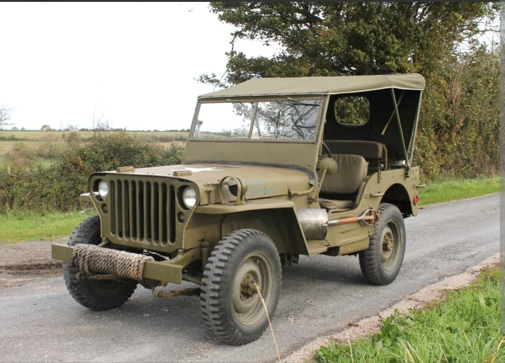
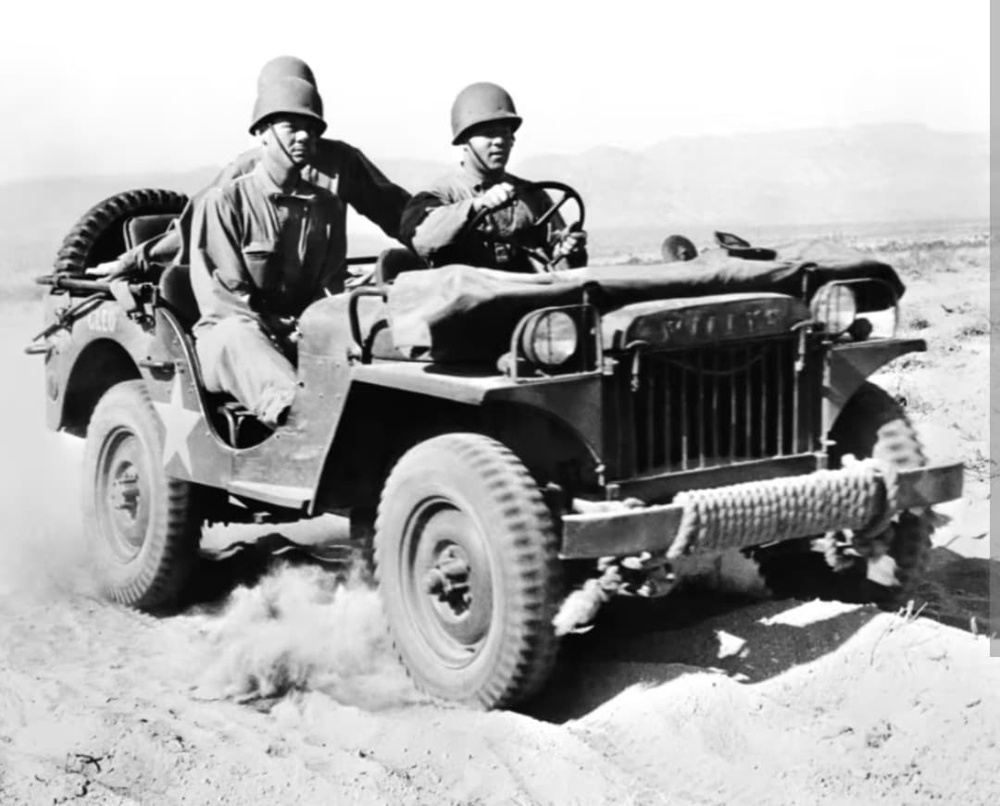
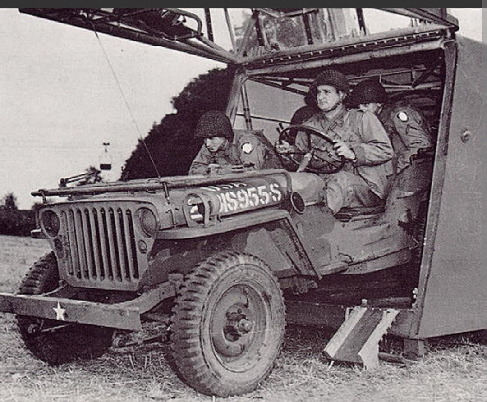

L'icône incontournable de la mobilité alliée et le symbole de la victoire de 1945

La Jeep Willys MB (ainsi que sa jumelle produite par Ford, la Ford GPW) est sans conteste le véhicule le plus célèbre de la Seconde Guerre mondiale.
Conçue pour répondre à un cahier des charges extrêmement strict du département de la Guerre des États-Unis en 1940, cette petite automobile tout-terrain à quatre roues motrices est devenue l'épine dorsale du transport tactique, de la liaison et du commandement pour l'ensemble des forces alliées.
Créée à l'origine sur la base d'un prototype Bantam, la formule finale fut affinée et produite en masse par **Willys-Overland** et **Ford**. Équipée du mythique moteur 4-cylindres en ligne « Go Devil » de 2,2 litres développant **60 chevaux**, la Jeep atteignait une vitesse maximale de 105 km/h sur route.
D'un poids à vide de seulement 1,1 tonne, elle possédait une boîte de transfert à deux rapports et une transmission intégrale débrayable, lui permettant de franchir des pentes escarpées, des ruisseaux et des terrains profondément boueux avec une aisance remarquable.

Déployée sur tous les théâtres d'opérations (Europe, Pacifique, Afrique du Nord et Front de l'Est via le programme Prêt-Bail), la Jeep a servi à une variété infinie de missions : véhicule de reconnaissance, ambulance de campagne transporteuse de brancards, poste radio mobile, tracteur d'artillerie légère ou encore plateforme d'incendie.
Souvent armée d'une mitrailleuse lourde **Browning M2 de 12,7 mm (.50 cal)** ou de mitrailleuses M1919 de 7,62 mm, elle équipa également les unités SAS britanniques pour des raids dévastateurs derrière les lignes ennemies.

Fabriquée à plus de **640 000 exemplaires** entre 1941 et 1945 (environ 360 000 par Willys et 280 000 par Ford), la Jeep fut qualifiée par le général Dwight D. Eisenhower comme l'une des quatre armes décisives ayant permis la victoire alliée, aux côtés du C-47 Skytrain, du bazooka et de la bombe atomique.
Son design épuré, avec sa calandre stamped à fentes verticales devenue légendaire, a donné naissance à toute la catégorie des véhicules 4x4 modernes et à la marque automobile Jeep.
Page du Musée HOP WW2 – Section Véhicules Terrestres Américains